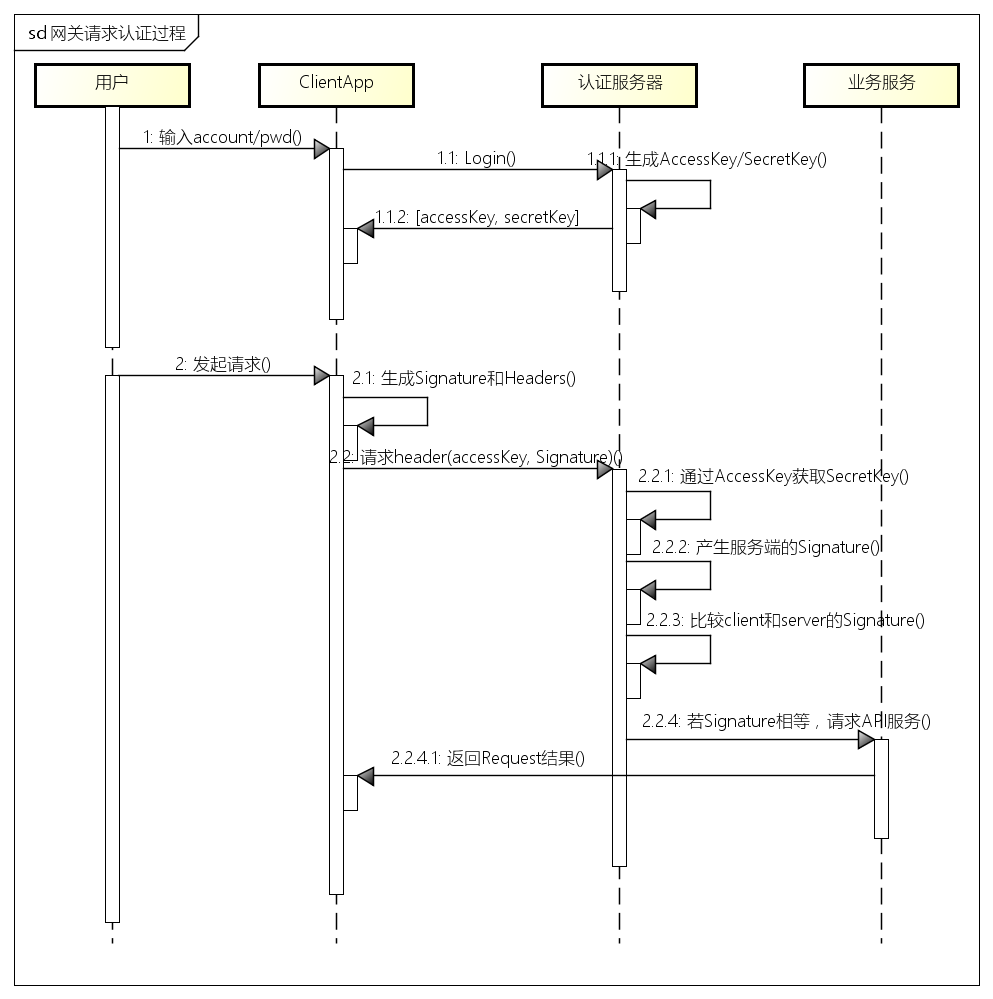
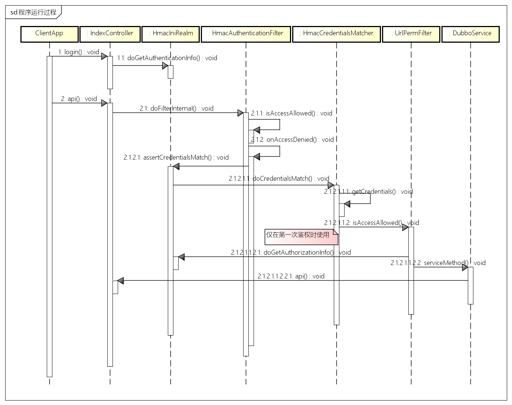
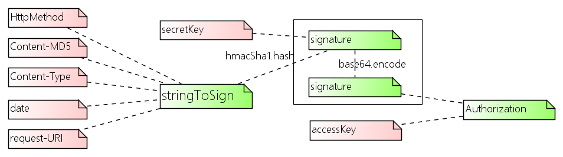

除以上基本能力外，网关还可以实现线上引流，线上压测，线上调试(Surgical debugging)，金丝雀测试(Canary Testing)，数据中心双活(Active-Active HA)等高级功能。
网关通常工作在7层，有一定的计算逻辑，一般以集群方式部署，前置LB进行负载均衡。
开源的网关组件有Netflix的Zuul，特点是动态可热部署的过滤器(filter)机制，其它如HAproxy，Nginx等都可以扩展作为网关使用。

对应的程序调用过程如下：

签名算法的原理如下图所示，用户登录后，获取AccessKey和SecretKey（这两个key都有一定的时效性），客户端和服务端各自保存同一个SecretKey， SecretKey不在请求中传递的；stringToSign是有客户端生成的，并要传递到服务端，客户端和服务端用SecretKey和stringToSign 生成签名Signature；客户端的Signature需要传递到服务端，服务端收到客户端的Signature后，和服务端自己生成的Signature进行比较，如果相等则认为是合法请求，否则不合法；这个签名Signature每次请求是不一样的。
移动网关中除了login之外，所有请求服务端 API 接口的请求均使用此签名算法进行校验。

算法如上图所示，对于客户端来说，AccessKey和SecretKey是用户登录后获得到的；HttpMethod、Content-Type、request-URI是HTTP的请求属性，可以统一设置；Content-MD5是用户请求内容的MD5后的字符串，date是当前时间的长整形值（毫秒）。
权限校验是采用基于URL的校验，即将用户可访问的URL放入用户权限缓存中，用户发出每次请求时，校验用户是否具有该URL的访问权限，如果有权限，则http的返回码是200，否则返回码为401。
系统所使用的所有服务接口是以dubbo服务的形式发布，移动网关将dubbo服务转换为http-json的API，网关只是做一个请求的转发，并将结果返回给客户端app。代码如下：
String interfaceName = getPara("interface");
String methodName = getPara("method");
String[] paraValues = getParaValues("params");
log.debug("Access API : {}#{}", interfaceName, methodName);
Class<?> clazz = null;
try {
clazz = Class.forName(interfaceName);
} catch (ClassNotFoundException e) {
throw new IllegalArgumentException("Could not find interface [" + interfaceName + "]");
}
DubboReferenceFactory.init(PropertyHolder.get("dubbo.register.center"), "API-GATEWAY");
Object obj = DubboReferenceFactory.createReference(clazz, "dubbo");
Object result = ReflectionUtil.invokeMethodByName(obj, methodName, paraValues);
if (result!=null){
renderJson(result);
}
URL url = new URL(baseUrl + "admin");
HttpPost method = new HttpPost(url.toURI());
String contentType = "application/json; charset=utf-8";
String entity = "lady gaga";
Header[] headers = buildHeader(ApiKey.ADMIN2, method, contentType, entity);
method.setHeaders(headers);
method.setEntity(new StringEntity(entity, ContentType.create(contentType)));
HttpResponse execute = client.execute(method);
StatusLine statusLine = execute.getStatusLine();
完整的调用过程参见测试用例HmacTest